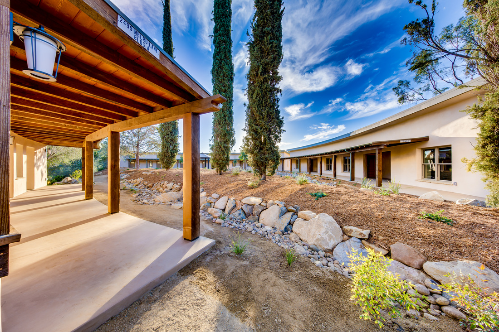
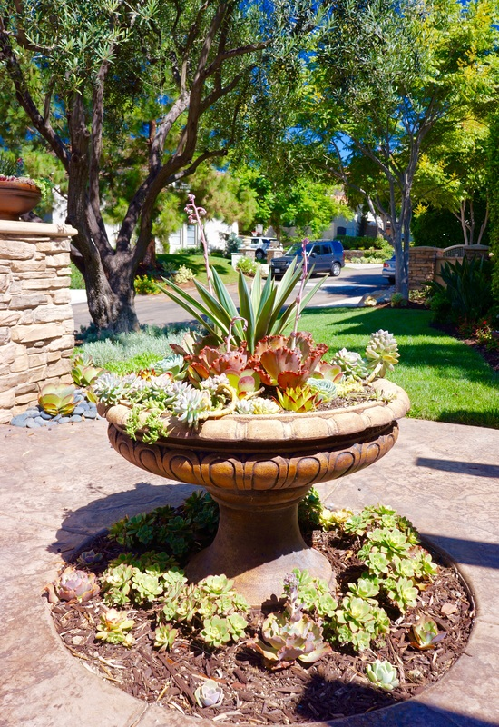
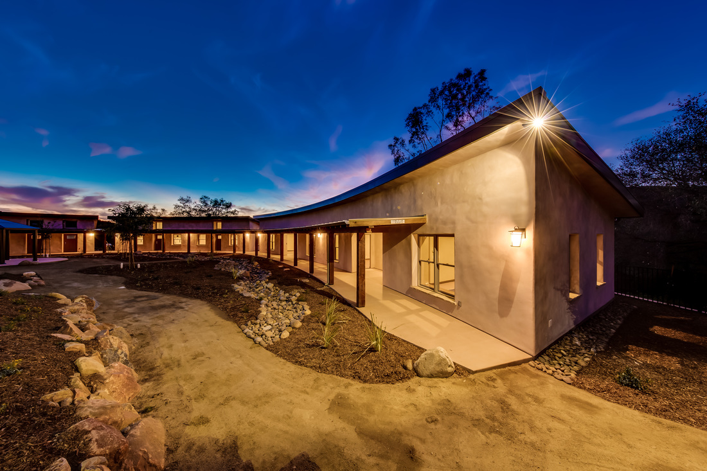
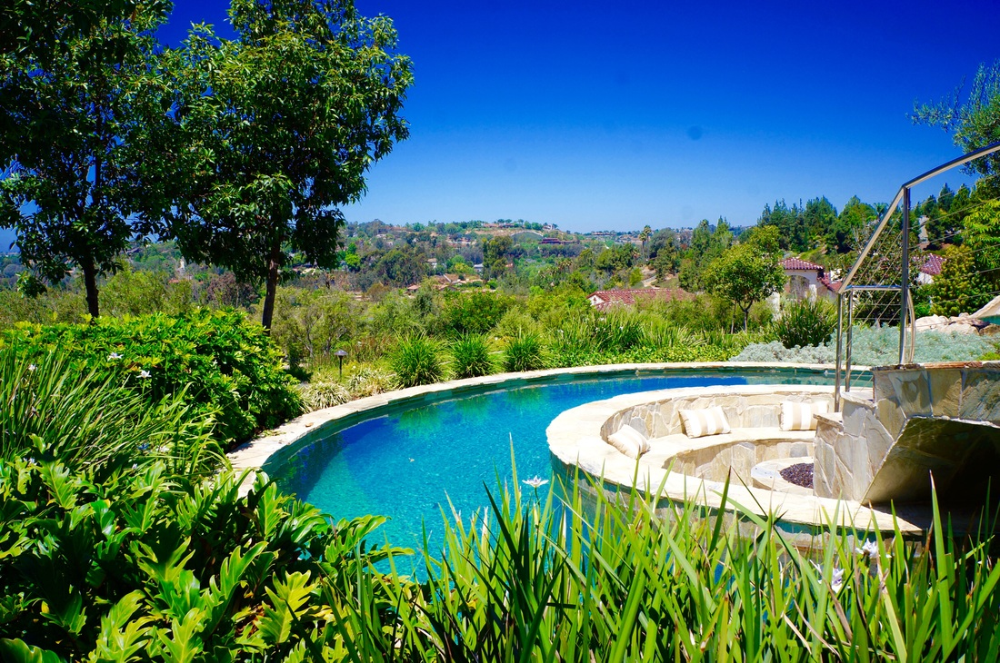
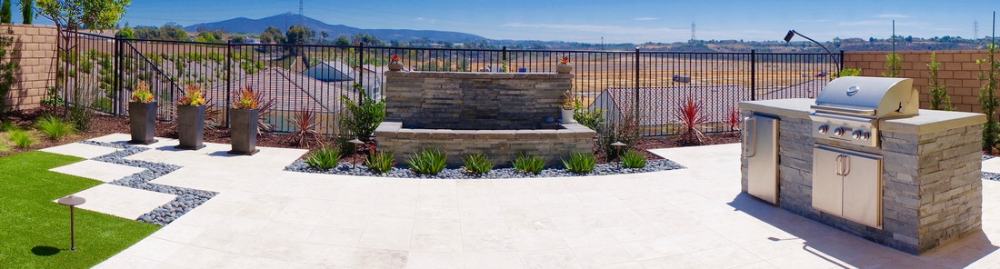
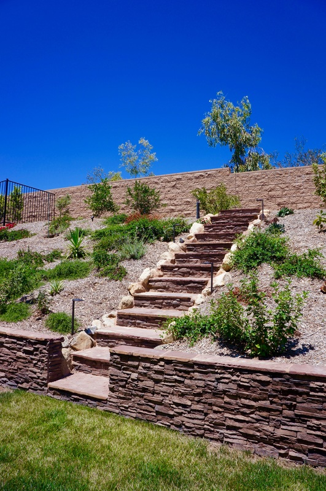
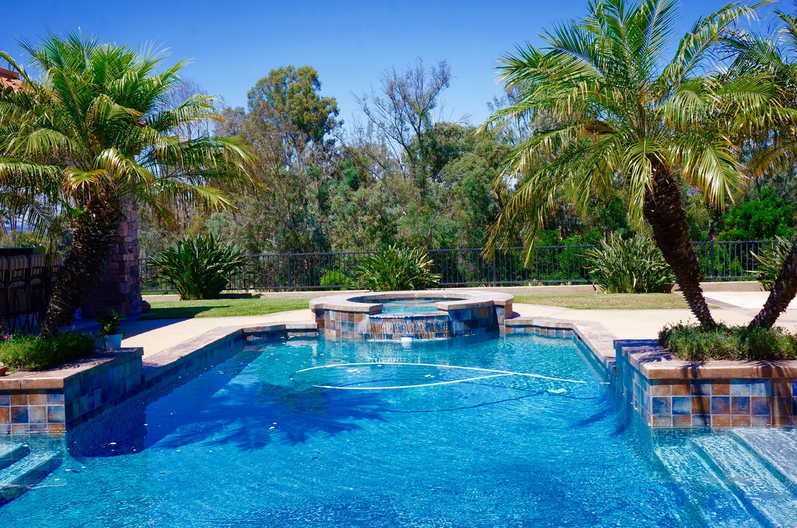
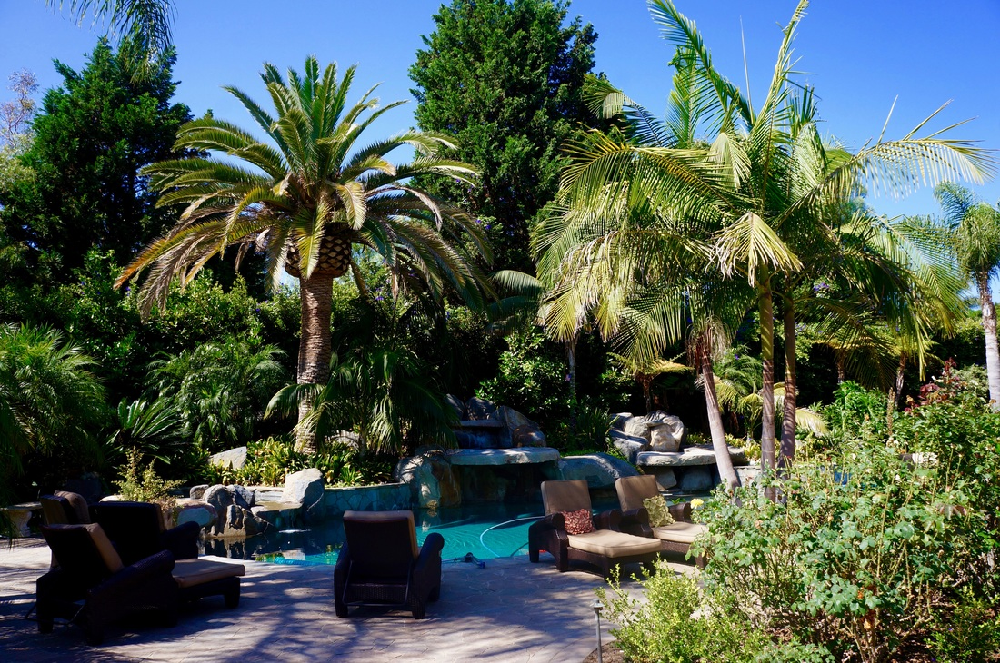
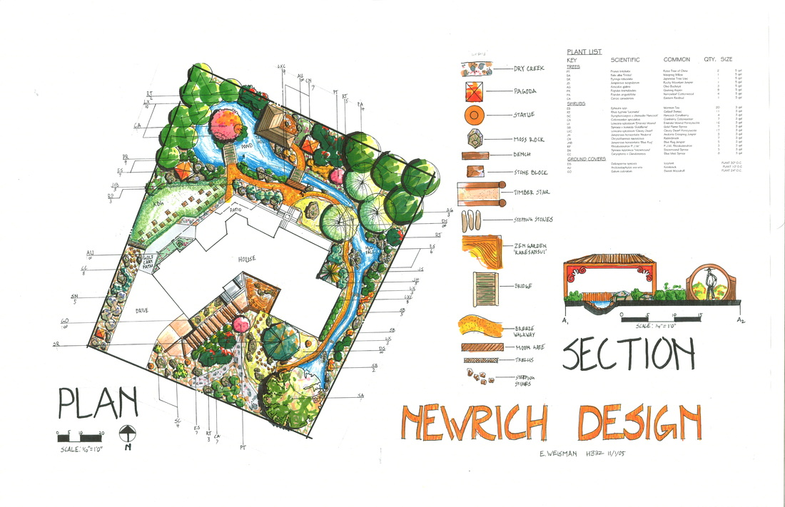
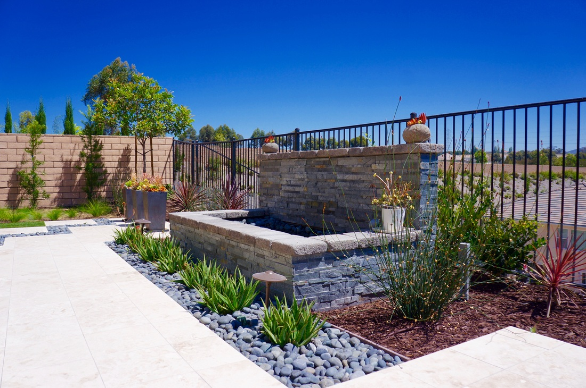

San Diego Landscape Lighting

Extend Your Outdoor Living Into the Evening
San Diego homeowners invest heavily in their outdoor spaces, but without proper lighting, those spaces go dark the moment the sun sets. Landscape lighting transforms your yard from a daytime feature into an all-hours destination. It highlights the architectural details of your hardscape, draws attention to mature plantings, and creates safe passage along walkways and stairs.
At Arcadian Landscape, we approach lighting as a design discipline, not an afterthought. Every fixture is placed with intention -- balancing brightness levels, color temperatures, and beam angles to create depth and drama without harsh glare. The result is an outdoor environment that feels warm, inviting, and completely natural after dark.
Whether you want to spotlight a specimen tree, illuminate a pool deck for evening entertaining, or simply make your front walkway safer for guests, our team designs and installs lighting systems that integrate seamlessly with your existing landscape.
Types of Landscape Lighting
From subtle path lights to dramatic uplighting, every fixture is placed with purpose.
Path & Walkway Lighting
Path lights are the foundation of any landscape lighting plan. Low-profile bollard fixtures or mushroom-style lights placed every six to eight feet along walkways, driveways, and garden paths provide enough illumination to walk confidently without flooding the area with light. We use warm-white LEDs (2700K-3000K) that mimic the softness of candlelight while maintaining enough output for safety. In San Diego's mild climate, paths get year-round use, so durable, marine-grade fixtures are essential to stand up to coastal moisture and salt air.

Accent & Spotlighting
Accent lighting is where artistry meets engineering. Uplighting a mature oak or jacaranda tree creates a canopy effect that transforms your entire yard. Spotlights trained on architectural features -- stone walls, water features, sculptures -- add depth and visual interest. We use adjustable-beam fixtures so each light can be fine-tuned to the exact angle and spread needed. Cross-lighting and silhouette techniques prevent flat, one-dimensional effects and create the layered look that distinguishes professional installations from DIY kits.
Deck & Patio Lighting
Your patio, deck, or pergola is the heart of outdoor entertaining, and the right lighting keeps the party going well past sundown. Recessed step lights improve safety on stairs and level changes. Under-cap rail lights cast a soft glow across seating areas without glare in your guests' eyes. We integrate fixtures into the structure itself -- tucked into risers, mounted beneath bench overhangs, or woven into pergola rafters -- so the light appears but the fixtures disappear. This approach keeps lines clean and the focus on the space, not the hardware.


Security Lighting
Security lighting does not have to look industrial. Motion-activated floods and strategically placed fixtures at entry points, side yards, and garage approaches deter intruders while blending with your landscape design. We position security fixtures at heights and angles that eliminate dark pockets without creating light trespass onto neighboring properties. Many of our clients opt for smart-enabled security lights that send alerts to their phones and integrate with home security systems, combining function with aesthetics.
Decorative String Lights
String lights, bistro lights, and festoon lighting create instant atmosphere for outdoor dining areas, pergolas, and garden entertaining spaces. We install commercial-grade string light systems with weather-rated sockets and shatterproof bulbs rated for permanent outdoor use. Unlike retail string lights that sag and fail, our installations use tensioned cable systems with proper support points to maintain clean, level runs across spans up to 50 feet. Warm Edison-style bulbs remain the most popular choice in San Diego for that relaxed, coastal evening feel.

LED vs. Traditional Landscape Lighting
The shift from halogen and incandescent to LED has been the single biggest improvement in landscape lighting over the past decade. LED fixtures use a fraction of the energy, last 10 to 25 times longer, and produce far less heat -- a meaningful benefit in Southern California where fixtures sit in direct sun all day.
LED technology also gives us more control over color temperature and beam patterns. Warm whites between 2700K and 3000K replicate the golden tone of traditional bulbs, while narrower beam options allow precise highlighting without spillover. Dimming is smooth and flicker-free, something halogen systems struggle with at low output levels.
The practical impact for homeowners: lower electric bills, fewer bulb replacements, and a lighting system that runs reliably for years with minimal maintenance. For properties with 20 or more fixtures, the annual energy savings alone can reach $200 to $400 compared to halogen equivalents.
Design Considerations for Your Property
Every landscape lighting project starts with the same question: what do you want to see and feel when you step outside at night? The answer shapes everything from fixture selection to placement strategy.
What to Highlight
Specimen trees, water features, and architectural walls are natural focal points. But great lighting also considers what to leave in shadow. Contrast is what creates drama. We walk your property at dusk during the design phase to identify the features that deserve attention and the areas where darkness actually improves the composition.
Safety First
Steps, grade changes, pool edges, and driveway transitions are the non-negotiable zones. These areas require lighting regardless of your aesthetic goals. We address safety requirements first, then layer ambient and accent lighting around them so the functional fixtures blend into the overall design.
Smart Controls and Timers
Modern landscape lighting systems run on low-voltage transformers with built-in timers, photocells, or smart controllers. A photocell turns lights on at dusk and off at dawn automatically. Smart controllers go further -- they let you create zones, adjust brightness per zone, set seasonal schedules, and control everything from your phone. For entertaining, you can set a "party mode" that brightens the patio and dims the perimeter. For overnight, a "security mode" keeps entry points lit while the rest of the property stays dark.

Our Lighting Design Process
Evening Consultation
We visit your property at dusk to see the existing light conditions, identify focal points, and understand how you use your outdoor spaces after dark. This visit tells us more than any daytime walkthrough ever could.
Design & Fixture Selection
We create a detailed lighting plan mapping every fixture location, beam direction, and wiring route. You approve the plan and select finishes -- bronze, black, stainless, or natural copper -- to match your landscape style.
Installation
Low-voltage wiring is buried in shallow trenches along existing landscape beds. Fixtures are secured, aimed, and tested. Most residential lighting projects are completed in one to two days with minimal disruption to your yard.
Evening Walkthrough
After installation, we return at night to fine-tune every fixture angle, adjust brightness levels, and walk you through your controller. You see the final result in real-world conditions before we call the job complete.
Landscape Lighting Projects




Landscape Lighting FAQ
Landscape lighting projects typically range from $2,500 to $15,000 depending on property size, number of fixtures, and complexity. A front walkway package might start around $2,500, while a full property design with accent lights, deck lighting, and smart controls can reach $15,000 or more. We provide a detailed estimate after our on-site evening consultation so there are no surprises.
We recommend LED for nearly every project. LEDs use 75-80% less energy, last 25,000 to 50,000 hours, and produce less heat than halogen or incandescent alternatives. The upfront cost is slightly higher, but LED fixtures pay for themselves within two to three years through energy savings and reduced replacement costs.
Yes. We install smart lighting controllers that let you adjust brightness, set schedules, and control zones from your phone. You can create scenes for entertaining, security, or ambient use. Timer and photocell options are also available for homeowners who prefer a simpler set-it-and-forget-it approach.
A typical front yard uses 8 to 15 fixtures. A full backyard with pathways, trees, and a patio area could require 20 to 40. The exact number depends on your property size, the features you want highlighted, and the overall effect you are after. During our design consultation, we map every fixture so you know exactly what to expect before installation begins.
Well-designed landscape lighting can increase your home's perceived value by 15-20%. It extends usable outdoor living hours, improves curb appeal, and enhances security. In San Diego's competitive real estate market, professional outdoor lighting is one of the highest-ROI landscape upgrades you can make.
Related Services
Landscape Design
Complete landscape design services that integrate lighting from the ground up. When lighting is planned alongside hardscape, planting, and grading, the results are seamless.
Learn More
Patios & Decks
Custom patios and decks designed for San Diego outdoor living. Pair your new patio with integrated lighting for a space that works day and night.
Learn More
Hardscape
Stone walls, pavers, and retaining walls provide the structural backbone of your landscape. Lighting these features amplifies their texture and visual impact after dark.
Learn More
Ready to Light Up Your Landscape?
Schedule a free evening consultation. We will walk your property at dusk, identify the best opportunities, and design a lighting plan tailored to your home and budget.